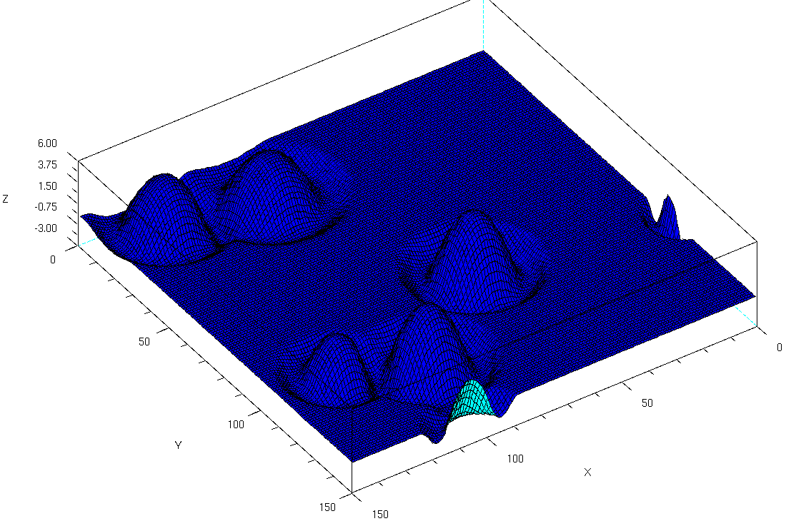
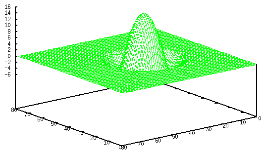
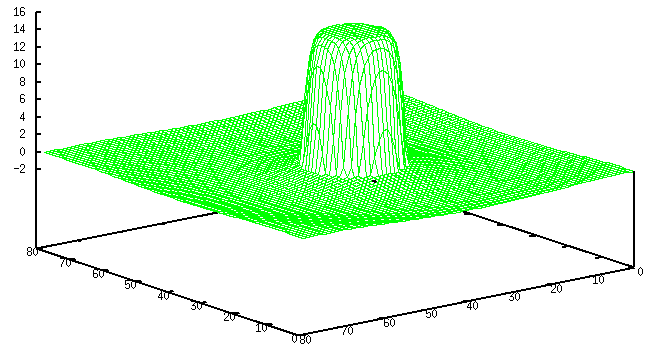
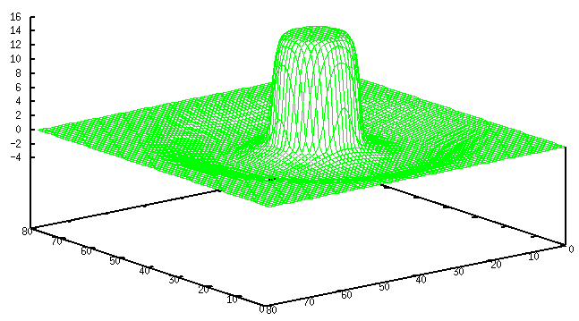
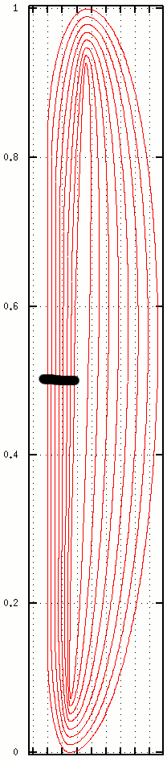
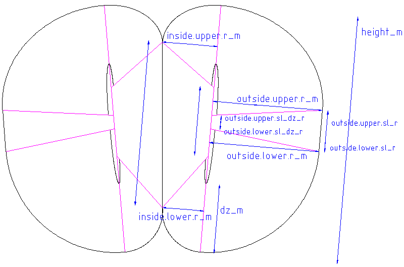

| January 2005 | Jens Wilhelm Wulf | Wrote first version |
| 02.02.2006 | Jens Wilhelm Wulf | Added revision history and section about how to set up the sim to test certain things. Minor updates. |
| 26.02.2006 | Jens Wilhelm Wulf | Description of thermal simulation version 3 |
CRRCSim provides several methods of how thermals are simulated. The one to use must be selected using THERMAL_CODE in crrc_config.h before compilation. Newer methods may be selected without recompilation.
So it's all about the gradient. If the simulation of the plane is done well, you'd expect it to show those gradients. If the left wing is in an area where the vertical velocity of the air is different from what the right wing sees, the plane should roll to one side or the other.
The old implementation let's your plane roll when you come near a thermal, but it will also do so at those steps on the floor!
In my opinion the old implementation is not that realistic. Obviously, there won't be such high gradients in moving air. Furthermore air moves down near a thermal -- but surely not in a rectangular grid.
Except for the area near ground, both the old and the new method describe thermals which are mostly independent of altitude.
I began with creating a mathematical description of the profile of a thermal -- the function of vertical velocity along the way from its core to the outside. Some important points:
Similar to the old method, the vertical velocity is zero near the ground and rises linearly until it reaches its full strength at a certain altitude.
A new feature of this method is that a thermals strength slowly decreases to zero instead of just disappearing when the thermal dies.
There is one aspect of thermals which isn't modeled by the new method yet: horizontal wind, which exists at least in the lower part of the thermal (vacuum cleaner effect). There is some code modeling this in the old method, but I didn't understand why it is done just like this.

#define THERMPROF 0

#define THERMPROF 2

#define THERMPROF 3

X axis is relative radius, Y axis is relative upward velocity of airmass. If you don't touch thermal parameters in CRRCSim and only change the type, thermals will relate to each other as shown above.
It is easy to see that thermalling with THERMPROF=0 is hard if parameters are left unchanged.
The same holds for THERMPROF=1, which is a proposal by Ulf
Gerber (see below).
Let's compare diameters: traditionally, radius is 50ft in CRRCSim. We
assume that this relates to x=1 in the diagram.
The whole radius of this thermal is at 2.6 in the diagram, which means
2.6*50ft=130ft=39.6m.
However, Ulf Gerber states that a typical thermal has a radius of 50m (in a
height of 50m above ground), including downwind.
To get this 'Ulf Gerber Standard Thermal' in CRRCSim, you have to set the radius to
50ft*50m/39.6m=63ft. But this will still be less powerful than the
traditional CRRCSim thermal.
THERMPROF=2 and THERMPROF=3 are only different regarding the area of downwind. Both have an effect similar to the old method if you enlarge the thermal's diameter using a factor in the range of 1.2 to 1.3.
The new thermal does not only take into account that 'what goes up must come down', but that it has to find its way from this inside to the outside (upper end of the thermal) and back again (lower end of thermal, vacuum cleaner effect).

The picture above shows some curves which, when rotated around the
y-axis (center of thermal), create some shells inside of which air
circulates. Basically a thermal is characterized by the shape of those
curves and the vertical velocity at y=0.5 (bold black line).
The distribution of velocity along this line can be varied.
One curve consists of two parts. One describes the inner
part where air moves upwards, the other one describes the outer part
where air moves downwards.
Every part consists of a straight line in the middle part (its length can
be zero as well), an ellipsis at the upper end and an ellipsis at the lower end.
The shape of those curves can be varied to some extend, as shown by the next picture.
Here not only one half of a thermal is shown.

To use the new version you have to insert some lines into your crrcsim.xml. Find the lines where thermal characteristics for davis are described:
<locations>
<location name="DAVIS">
...
<thermal strength_mean="5" strength_sigma="1" radius_mean="70"
radius_sigma="10" density="3.0000001e-06" lifetime_mean="240" lifetime_sigma="60" />
Now, as a starting point, change that to
<locations>
<location name="DAVIS">
...
<thermal strength_mean="5" strength_sigma="1"
radius_mean="70" radius_sigma="10"
density="3.0000001e-06" lifetime_mean="240" lifetime_sigma="60">
<v3 vRefExp="2" dz_m="50" height_m="600"
fileA="schalen.dat" fileB="feld.dat" fileC="vel.dat">
<inside>
<upper r_m="30" sl_r="0.8" sl_dz_r="0.2" />
<lower r_m="20" sl_r="0.8" sl_dz_r="0.2" />
</inside>
<outside>
<upper r_m="65" sl_r="0" sl_dz_r="0.7" />
<lower r_m="65" sl_r="0" sl_dz_r="0.7" />
</outside>
</v3>
</thermal>
Here you can adjust the shape of a thermal.The values ending in _m are absolute values in meters, those ending in _r are relative values in the range 0 to 1.
vRefExp describes upwards velocity profile at average height. 1 lets velocity rise linearily; a value of 2 makes sense. Bigger numbers result in a more 'blocky' profile.
fileA, fileB and fileC instruct CRRCSim to write out some data files which show thermal characteristics. You can use GNUPlot to view those files; it is available for Windows, too.
I do use a file schalen.gnuplot to view schalen.dat. The picture above (red lines showing the curves) has been created using it. Just execute gnuplot schalen.gnuplot to view. You can zoom using the right mouse button, hitting a shows everything again. schalen.gnuplot looks like this:
set grid x
set grid y
set size ratio -1
set key off
plot 'schalen.dat' with lines
pause -1 "plb"
I do use a file vel.gnuplot to view vel.dat. Just execute gnuplot vel.gnuplot to view. You can zoom using the right mouse button, hitting a shows everything again. vel.gnuplot looks like this:
set grid x
set grid y
set key off
plot 'vel.dat' with lines
pause -1 "plb"
W_atmo_X shows strong effect -- OK
Why are there two transformations in crrc_aero.cpp?
G_32 shows strong effect
W_body_Y shows strong effect -- OK
That does not affect CL_left and CL_right, although this vertical flow
should clearly change the effective alpha.
Even changing CL_left and CL_right does not let the aircraft roll. They
only change stalling behaviour.
Conclusion: having a more realistic windfield is not of much use, the
current model does not respond to it. Is it wrong or just not implemented?
I think CL_left and CL_right should be affected (which is not the case)
and they in turn should let the aircraft roll (which is not the case).
There is a switch THERMAL_TEST in windfield.cpp. To get a thermal at a fixed position, set this to 1 (heading towards the thermals edge) or 2 (flying straight into thermal).
Fly at Davis and set:
| wind direction | 180° |
| wind velocity | 0 ft/s |
| launch altitude | 50 ft |
| launch relative velocity | 1 |
| launch angle | 0 rad |
Use DEBUG_THERMAL_SCRSHOT in crrc_config.h. Take a look at the notes in that file. There is another define DEBUG_THERMAL_SCRSHOT_FORMAT which can be used to adjust the format of the output file to various plotting programs. See windfield.cpp.
Das Thermikbuch für Modellflieger written by Markus Lisken and Ulf Gerber, Verlag für Technik und Handwerk, Baden-Baden.